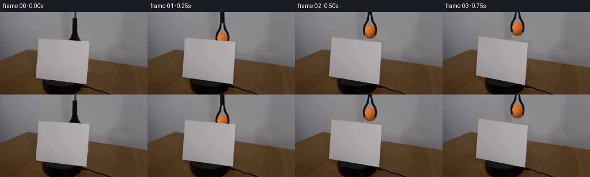

候选 01 · 2026-11-08T21:22:14.618056+00:00 · 点开播放与检查图
inspection.png

transition_check.png

代码变化
--- 上一保存版本
+++ 本次保存版本
@@ -0,0 +1,194 @@
+from pathlib import Path
+import math
+import numpy as np
+from PIL import Image, ImageDraw, ImageFilter
+import cv2
+from scipy.ndimage import gaussian_filter, map_coordinates
+from artifact_io import save
+
+ROOT=Path(__file__).resolve().parent
+S=4; W=256; H=144
+im=np.asarray(Image.open(ROOT/'first_frame.png').convert('RGB'))
+rng=np.random.default_rng(8204)
+Y,X=np.mgrid[:H,:W].astype(float)
+quad=np.array([[67,46],[155,51],[150,125],[62,115]],np.float32)
+mask=np.zeros((H,W),np.uint8); cv2.fillConvexPoly(mask,quad.astype(int),255)
+mask=cv2.dilate(mask,np.ones((3,3),np.uint8))>0
+pole=np.zeros((H,W),np.uint8)
+cv2.fillPoly(pole,[np.array([[124,0],[135,0],[136,32],[143,52],[117,52],[123,34]])],255)
+hole=mask|(pole>0)
+# Fit the smoothly lit wall to visible pixels, excluding the apparatus and table.
+boundary=58.4+.146*X
+known=(Y<boundary-2)&(~hole)
+xn=(X-128)/128; yn=(Y-70)/100
+powers=[(a,b) for a in range(4) for b in range(4-a)]
+A=np.stack([xn**a*yn**b for a,b in powers],-1)
+coef=np.linalg.lstsq(A[known],im[known].astype(float),rcond=None)[0]
+wall=A@coef
+wall+=gaussian_filter(rng.normal(0,.65,(H,W)),.5)[...,None]
+# Re-use a real patch of the wood surface with its perspective grain direction.
+# Coordinates parallel to the visible boards converge towards the upper right.
+vpy=-90.; vpx=228.
+u=(X-vpx)/(Y-vpy)
+srcy=106+np.mod(Y-72,34)
+srcx=vpx+(u+.60)*(srcy-vpy)
+srcx=168+np.mod(srcx-168,84)
+wood=np.stack([map_coordinates(im[:,:,k].astype(float),[srcy,srcx],order=1,mode='nearest') for k in range(3)],-1)
+# Restore spatial colour and low-frequency illumination from visible tabletop.
+tknown=(Y>boundary+2)&(~hole)&((X<64)|(X>159))
+B=np.stack([np.ones_like(X),xn,yn,xn*xn,xn*yn,yn*yn],-1)
+tcoef=np.linalg.lstsq(B[tknown],im[tknown].astype(float),rcond=None)[0]
+woodbase=B@tcoef
+tex=wood-gaussian_filter(wood,(4,4,0))
+wood=woodbase+tex*.9
+bg=im.astype(float).copy()
+fill=np.where((Y<boundary)[...,None],wall,wood)
+bg[hole]=fill[hole]
+# Motorized circular black plinth. The original exposed rim is kept intact.
+cx,cy,rx,ry=109.,117.,35.,13.
+for yy in range(H):
+ for xx in range(W):
+ if not hole[yy,xx]: continue
+ dx=(xx-cx)/rx
+ if abs(dx)>1:continue
+ rear=cy-ry*np.sqrt(1-dx*dx); front=cy+ry*np.sqrt(1-dx*dx)
+ if rear<=yy<=front:
+ val=24.5+2*(xx-cx)/rx-2.5*(yy-cy)/ry
+ bg[yy,xx]=[val,val,val+1.2]
+ elif front<yy<front+17:
+ val=8.5+2.8*(1-dx*dx)+1.5*np.exp(-((yy-front-1)/1.5)**2)
+ bg[yy,xx]=[val,val,val+.4]
+# Smooth the reconstructed/existing boundary without softening the real scene.
+# Only the small repaired background regions are affected.
+bg=np.clip(bg,0,255).astype(np.uint8)
+# Mask blending along original occlusion boundary reduces any restoration join.
+blended=bg.copy()
+# Supersampled canvas.
+base=Image.fromarray(bg).resize((W*S,H*S),Image.Resampling.BICUBIC)
+# Texture from the original cardstock, sampled strictly inside its four edges.
+tw,th=356,288
+src=quad.copy(); cen=src.mean(0); src=cen+(src-cen)*.985
+T=cv2.getPerspectiveTransform(src,np.array([[0,0],[tw-1,0],[tw-1,th-1],[0,th-1]],np.float32))
+cardtex=cv2.warpPerspective(im,T,(tw,th),flags=cv2.INTER_LINEAR,borderMode=cv2.BORDER_REPLICATE)
+
+# Orthographic camera with a small perspective correction calibrated to the photograph.
+def rawproject(a):
+ out=[]
+ for u,z in [(-44,72),(44,72),(44,0),(-44,0)]:
+ xx=u*np.cos(a)-23*np.sin(a)
+ dd=u*np.sin(a)+23*np.cos(a)
+ out.append([106+xx+.069444*z,112+.105*xx+.35*dd-z*(1+.0007*xx)])
+ return np.array(out,np.float32)
+cal=cv2.getPerspectiveTransform(rawproject(0),quad)
+def cardquad(a):
+ q=rawproject(a).reshape(-1,1,2)
+ return cv2.perspectiveTransform(q,cal).reshape(-1,2)
+
+def composite_shadow(canvas, pts, opacity, blur):
+ m=Image.new('L',canvas.size,0);d=ImageDraw.Draw(m)
+ d.polygon([(int(x*S),int(y*S)) for x,y in pts],fill=int(opacity))
+ m=m.filter(ImageFilter.GaussianBlur(blur*S))
+ return Image.composite(Image.new('RGB',canvas.size,(0,0,0)),canvas,m)
+
+def ball(canvas,cx,cy,r=11.8):
+ arr=np.asarray(canvas).astype(float)
+ yy,xx=np.mgrid[:H*S,:W*S]
+ nx=(xx+.5-cx*S)/(r*S); ny=(yy+.5-cy*S)/(r*S)
+ rad=nx*nx+ny*ny
+ inside=rad<1
+ nz=np.sqrt(np.maximum(0,1-rad))
+ L=np.array([-.42,-.61,.68]); L/=np.linalg.norm(L)
+ light=np.maximum(0,nx*L[0]+ny*L[1]+nz*L[2])
+ shade=.50+.50*light
+ noise=rng.normal(0,1,(H*S,W*S))
+ fuzz=gaussian_filter(noise,.45)*2.8
+ rgb=np.zeros_like(arr)
+ for k,col in enumerate([232,121,40]):
+ rgb[:,:,k]=col*shade+fuzz+(nz**13)*[2.0,1.2,.8][k]
+ # Camera-facing portion of a continuous tennis-ball seam on a sphere.
+ t=np.linspace(0,2*np.pi,1600)
+ p=np.stack([np.cos(t),np.sin(t),.55*np.cos(2*t)],1)
+ p=p/np.linalg.norm(p,axis=1)[:,None]
+ ax=.36; ay=.72; az=-.34
+ Rx=np.array([[1,0,0],[0,np.cos(ax),-np.sin(ax)],[0,np.sin(ax),np.cos(ax)]])
+ Ry=np.array([[np.cos(ay),0,np.sin(ay)],[0,1,0],[-np.sin(ay),0,np.cos(ay)]])
+ Rz=np.array([[np.cos(az),-np.sin(az),0],[np.sin(az),np.cos(az),0],[0,0,1]])
+ p=p@(Rz@Ry@Rx).T
+ seam=Image.new('L',canvas.size,0); d=ImageDraw.Draw(seam)
+ last=None
+ for v in p:
+ if v[2]<.035: last=None;continue
+ pt=((cx+r*v[0])*S,(cy+r*v[1])*S)
+ if last is not None:d.line([last,pt],fill=255,width=3)
+ last=pt
+ sa=np.asarray(seam.filter(ImageFilter.GaussianBlur(.28*S))).astype(float)/255
+ sa*=inside
+ seamcol=np.stack([220*shade,193*shade,136*shade],-1)
+ rgb=rgb*(1-sa[...,None]*.83)+seamcol*sa[...,None]*.83
+ alpha=np.clip((1-np.sqrt(rad))*r*S+.4,0,1)
+ arr=arr*(1-alpha[...,None])+rgb*alpha[...,None]
+ return Image.fromarray(np.uint8(np.clip(arr,0,255)))
+
+def tool(canvas,ball_y,opening=0):
+ # Long aluminium tube, dark blue-black sleeve, and two rubberized curved jaws.
+ cx=130.0; by=ball_y
+ d=ImageDraw.Draw(canvas)
+ def poly(points,col):d.polygon([(round(x*S),round(y*S)) for x,y in points],fill=col)
+ def line(points,col,width):d.line([(round(x*S),round(y*S)) for x,y in points],fill=col,width=max(1,round(width*S)),joint='curve')
+ neck=by-30
+ poly([(cx-3,-10),(cx+2.7,-10),(cx+2.7,neck-17),(cx-3,neck-17)],(76,79,80))
+ line([(cx-1.3,-10),(cx-1.3,neck-17)],(141,146,148),1.2)
+ line([(cx+2,-10),(cx+2,neck-17)],(43,46,48),.7)
+ poly([(cx-4.1,neck-20),(cx+3.3,neck-20),(cx+3.6,neck),(cx-4,neck)],(14,18,21))
+ line([(cx-3.6,neck-19),(cx-3.6,neck-1)],(36,44,50),.7)
+ # Jaws bow out to embrace, and open laterally on release.
+ for side in [-1,1]:
+ a=side
+ pts=[(cx+a*1.3,neck-3),(cx+a*3.7,neck),(cx+a*(6.2+opening*.4),by-20),
+ (cx+a*(10.7+opening*.8),by-12),(cx+a*(12.2+opening),by-4),
+ (cx+a*(11.0+opening),by+4),(cx+a*(8.8+opening),by+5.0),
+ (cx+a*(8.6+opening),by+2),(cx+a*(9.2+opening),by-4),
+ (cx+a*(7.6+opening*.7),by-11),(cx+a*2.3,by-20)]
+ poly(pts,(14,21,27))
+ line([pts[1],pts[2],pts[3],pts[4]],(35,49,59),.65)
+ line([pts[5],pts[6],pts[7]],(9,12,15),1)
+ d.ellipse(((cx-1.1)*S,(neck-1.1)*S,(cx+1.1)*S,(neck+1.1)*S),fill=(68,75,77))
+ return canvas
+
+def drawcard(canvas,a):
+ q=cardquad(a)
+ # The barely visible cut edge of the paper.
+ d=ImageDraw.Draw(canvas)
+ qedge=q+np.array([.32,-.02])
+ d.polygon([tuple(v*S) for v in qedge],fill=(117,115,112))
+ tex=np.clip(cardtex.astype(float)*(1-.11*np.sin(a)**2),0,255).astype(np.uint8)
+ M=cv2.getPerspectiveTransform(np.array([[0,0],[tw-1,0],[tw-1,th-1],[0,th-1]],np.float32),q*S)
+ warped=cv2.warpPerspective(tex,M,(W*S,H*S),flags=cv2.INTER_CUBIC,borderMode=cv2.BORDER_REPLICATE)
+ maskim=Image.new('L',canvas.size,0);md=ImageDraw.Draw(maskim);md.polygon([tuple(v*S) for v in q],fill=255)
+ return Image.composite(Image.fromarray(warped),canvas,maskim)
+
+# Raise the held ball briefly clear of the screen, then lower it onto the tabletop.
+ball_y=[63,49,35,30,31,40,55,72,86,91,91,91,91,91,91,91,91,91,91,91]
+tool_y=[63,49,35,30,31,40,55,72,86,91,91,80,58,34,7,-27,-60,-60,-60,-60]
+frames=[im.copy()]
+for i in range(1,20):
+ a=np.deg2rad(i*4.6)
+ canvas=base.copy()
+ q=cardquad(a)
+ # Soft shadow of the rotating sheet falls on the tabletop, never on the wall.
+ b1,b2=q[3],q[2]
+ canvas=composite_shadow(canvas,[b1,b2,b2+[12,7],b1+[12,7]],33,2.2)
+ # A stationary contact shadow anchors the ball as it reaches the table.
+ sh=Image.new('L',canvas.size,0); d=ImageDraw.Draw(sh)
+ dist=max(0,91-ball_y[i]); op=int(62*np.exp(-dist/20)); sy=102.2
+ d.ellipse(((130-12-dist*.15)*S,(sy-2.6)*S,(130+12+dist*.15)*S,(sy+3.1)*S),fill=op)
+ sh=sh.filter(ImageFilter.GaussianBlur((1.1+dist*.03)*S))
+ canvas=Image.composite(Image.new('RGB',canvas.size,(0,0,0)),canvas,sh)
+ canvas=ball(canvas,130,ball_y[i])
+ if i<17:canvas=tool(canvas,tool_y[i],0 if i<10 else (3.5 if i==10 else 5.0))
+ canvas=drawcard(canvas,a)
+ frame=np.asarray(canvas.resize((W,H),Image.Resampling.LANCZOS))
+ frames.append(frame)
+frames=np.stack(frames)
+save(frames,ROOT)
+Image.fromarray(bg).save(ROOT/'.tmp/background.png')
命令 4 · 2026-11-08T21:22:13.361871+00:00/bin/bash -lc "cat > generate.py <<'PY'
from pathlib import Path
import math
import numpy as np
from PIL import Image, ImageDraw, ImageFilter
import cv2
from scipy.ndimage import gaussian_filter, map_coordinates
from artifact_io import save
ROOT=Path(__file__).resolve().parent
S=4; W=256; H=144
im=np.asarray(Image.open(ROOT/'first_frame.png').convert('RGB'))
rng=np.random.default_rng(8204)
Y,X=np.mgrid[:H,:W].astype(float)
quad=np.array([[67,46],[155,51],[150,125],[62,115]],np.float32)
mask=np.zeros((H,W),np.uint8); cv2.fillConvexPoly(mask,quad.astype(int),255)
mask=cv2.dilate(mask,np.ones((3,3),np.uint8))>0
pole=np.zeros((H,W),np.uint8)
cv2.fillPoly(pole,[np.array([[124,0],[135,0],[136,32],[143,52],[117,52],[123,34]])],255)
hole=mask|(pole>0)
# Fit the smoothly lit wall to visible pixels, excluding the apparatus and table.
boundary=58.4+.146*X
known=(Y<boundary-2)&(~hole)
xn=(X-128)/128; yn=(Y-70)/100
powers=[(a,b) for a in range(4) for b in range(4-a)]
A=np.stack([xn**a*yn**b for a,b in powers],-1)
coef=np.linalg.lstsq(A[known],im[known].astype(float),rcond=None)[0]
wall=A@coef
wall+=gaussian_filter(rng.normal(0,.65,(H,W)),.5)[...,None]
# Re-use a real patch of the wood surface with its perspective grain direction.
# Coordinates parallel to the visible boards converge towards the upper right.
vpy=-90.; vpx=228.
u=(X-vpx)/(Y-vpy)
srcy=106+np.mod(Y-72,34)
srcx=vpx+(u+.60)*(srcy-vpy)
srcx=168+np.mod(srcx-168,84)
wood=np.stack([map_coordinates(im[:,:,k].astype(float),[srcy,srcx],order=1,mode='nearest') for k in range(3)],-1)
# Restore spatial colour and low-frequency illumination from visible tabletop.
tknown=(Y>boundary+2)&(~hole)&((X<64)|(X>159))
B=np.stack([np.ones_like(X),xn,yn,xn*xn,xn*yn,yn*yn],-1)
tcoef=np.linalg.lstsq(B[tknown],im[tknown].astype(float),rcond=None)[0]
woodbase=B@tcoef
tex=wood-gaussian_filter(wood,(4,4,0))
wood=woodbase+tex*.9
bg=im.astype(float).copy()
fill=np.where((Y<boundary)[...,None],wall,wood)
bg[hole]=fill[hole]
# Motorized circular black plinth. The original exposed rim is kept intact.
cx,cy,rx,ry=109.,117.,35.,13.
for yy in range(H):
for xx in range(W):
if not hole[yy,xx]: continue
dx=(xx-cx)/rx
if abs(dx)>1:continue
rear=cy-ry*np.sqrt(1-dx*dx); front=cy+ry*np.sqrt(1-dx*dx)
if rear<=yy<=front:
val=24.5+2*(xx-cx)/rx-2.5*(yy-cy)/ry
bg[yy,xx]=[val,val,val+1.2]
elif front<yy<front+17:
val=8.5+2.8*(1-dx*dx)+1.5*np.exp(-((yy-front-1)/1.5)**2)
bg[yy,xx]=[val,val,val+.4]
# Smooth the reconstructed/existing boundary without softening the real scene.
# Only the small repaired background regions are affected.
bg=np.clip(bg,0,255).astype(np.uint8)
# Mask blending along original occlusion boundary reduces any restoration join.
blended=bg.copy()
# Supersampled canvas.
base=Image.fromarray(bg).resize((W*S,H*S),Image.Resampling.BICUBIC)
# Texture from the original cardstock, sampled strictly inside its four edges.
tw,th=356,288
src=quad.copy(); cen=src.mean(0); src=cen+(src-cen)*.985
T=cv2.getPerspectiveTransform(src,np.array([[0,0],[tw-1,0],[tw-1,th-1],[0,th-1]],np.float32))
cardtex=cv2.warpPerspective(im,T,(tw,th),flags=cv2.INTER_LINEAR,borderMode=cv2.BORDER_REPLICATE)
# Orthographic camera with a small perspective correction calibrated to the photograph.
def rawproject(a):
out=[]
for u,z in [(-44,72),(44,72),(44,0),(-44,0)]:
xx=u*np.cos(a)-23*np.sin(a)
dd=u*np.sin(a)+23*np.cos(a)
out.append([106+xx+.069444*z,112+.105*xx+.35*dd-z*(1+.0007*xx)])
return np.array(out,np.float32)
cal=cv2.getPerspectiveTransform(rawproject(0),quad)
def cardquad(a):
q=rawproject(a).reshape(-1,1,2)
return cv2.perspectiveTransform(q,cal).reshape(-1,2)
def composite_shadow(canvas, pts, opacity, blur):
m=Image.new('L',canvas.size,0);d=ImageDraw.Draw(m)
d.polygon([(int(x*S),int(y*S)) for x,y in pts],fill=int(opacity))
m=m.filter(ImageFilter.GaussianBlur(blur*S))
return Image.composite(Image.new('RGB',canvas.size,(0,0,0)),canvas,m)
def ball(canvas,cx,cy,r=11.8):
arr=np.asarray(canvas).astype(float)
yy,xx=np.mgrid[:H*S,:W*S]
nx=(xx+.5-cx*S)/(r*S); ny=(yy+.5-cy*S)/(r*S)
rad=nx*nx+ny*ny
inside=rad<1
nz=np.sqrt(np.maximum(0,1-rad))
L=np.array([-.42,-.61,.68]); L/=np.linalg.norm(L)
light=np.maximum(0,nx*L[0]+ny*L[1]+nz*L[2])
shade=.50+.50*light
noise=rng.normal(0,1,(H*S,W*S))
fuzz=gaussian_filter(noise,.45)*2.8
rgb=np.zeros_like(arr)
for k,col in enumerate([232,121,40]):
rgb[:,:,k]=col*shade+fuzz+(nz**13)*[2.0,1.2,.8][k]
# Camera-facing portion of a continuous tennis-ball seam on a sphere.
t=np.linspace(0,2*np.pi,1600)
p=np.stack([np.cos(t),np.sin(t),.55*np.cos(2*t)],1)
p=p/np.linalg.norm(p,axis=1)[:,None]
ax=.36; ay=.72; az=-.34
Rx=np.array([[1,0,0],[0,np.cos(ax),-np.sin(ax)],[0,np.sin(ax),np.cos(ax)]])
Ry=np.array([[np.cos(ay),0,np.sin(ay)],[0,1,0],[-np.sin(ay),0,np.cos(ay)]])
Rz=np.array([[np.cos(az),-np.sin(az),0],[np.sin(az),np.cos(az),0],[0,0,1]])
p=p@(Rz@Ry@Rx).T
seam=Image.new('L',canvas.size,0); d=ImageDraw.Draw(seam)
last=None
for v in p:
if v[2]<.035: last=None;continue
pt=((cx+r*v[0])*S,(cy+r*v[1])*S)
if last is not None:d.line([last,pt],fill=255,width=3)
last=pt
sa=np.asarray(seam.filter(ImageFilter.GaussianBlur(.28*S))).astype(float)/255
sa*=inside
seamcol=np.stack([220*shade,193*shade,136*shade],-1)
rgb=rgb*(1-sa[...,None]*.83)+seamcol*sa[...,None]*.83
alpha=np.clip((1-np.sqrt(rad))*r*S+.4,0,1)
arr=arr*(1-alpha[...,None])+rgb*alpha[...,None]
return Image.fromarray(np.uint8(np.clip(arr,0,255)))
def tool(canvas,ball_y,opening=0):
# Long aluminium tube, dark blue-black sleeve, and two rubberized curved jaws.
cx=130.0; by=ball_y
d=ImageDraw.Draw(canvas)
def poly(points,col):d.polygon([(round(x*S),round(y*S)) for x,y in points],fill=col)
def line(points,col,width):d.line([(round(x*S),round(y*S)) for x,y in points],fill=col,width=max(1,round(width*S)),joint='curve')
neck=by-30
poly([(cx-3,-10),(cx+2.7,-10),(cx+2.7,neck-17),(cx-3,neck-17)],(76,79,80))
line([(cx-1.3,-10),(cx-1.3,neck-17)],(141,146,148),1.2)
line([(cx+2,-10),(cx+2,neck-17)],(43,46,48),.7)
poly([(cx-4.1,neck-20),(cx+3.3,neck-20),(cx+3.6,neck),(cx-4,neck)],(14,18,21))
line([(cx-3.6,neck-19),(cx-3.6,neck-1)],(36,44,50),.7)
# Jaws bow out to embrace, and open laterally on release.
for side in [-1,1]:
a=side
pts=[(cx+a*1.3,neck-3),(cx+a*3.7,neck),(cx+a*(6.2+opening*.4),by-20),
(cx+a*(10.7+opening*.8),by-12),(cx+a*(12.2+opening),by-4),
(cx+a*(11.0+opening),by+4),(cx+a*(8.8+opening),by+5.0),
(cx+a*(8.6+opening),by+2),(cx+a*(9.2+opening),by-4),
(cx+a*(7.6+opening*.7),by-11),(cx+a*2.3,by-20)]
poly(pts,(14,21,27))
line([pts[1],pts[2],pts[3],pts[4]],(35,49,59),.65)
line([pts[5],pts[6],pts[7]],(9,12,15),1)
d.ellipse(((cx-1.1)*S,(neck-1.1)*S,(cx+1.1)*S,(neck+1.1)*S),fill=(68,75,77))
return canvas
def drawcard(canvas,a):
q=cardquad(a)
# The barely visible cut edge of the paper.
d=ImageDraw.Draw(canvas)
qedge=q+np.array([.32,-.02])
d.polygon([tuple(v*S) for v in qedge],fill=(117,115,112))
tex=np.clip(cardtex.astype(float)*(1-.11*np.sin(a)**2),0,255).astype(np.uint8)
M=cv2.getPerspectiveTransform(np.array([[0,0],[tw-1,0],[tw-1,th-1],[0,th-1]],np.float32),q*S)
warped=cv2.warpPerspective(tex,M,(W*S,H*S),flags=cv2.INTER_CUBIC,borderMode=cv2.BORDER_REPLICATE)
maskim=Image.new('L',canvas.size,0);md=ImageDraw.Draw(maskim);md.polygon([tuple(v*S) for v in q],fill=255)
return Image.composite(Image.fromarray(warped),canvas,maskim)
# Raise the held ball briefly clear of the screen, then lower it onto the tabletop.
ball_y=[63,49,35,30,31,40,55,72,86,91,91,91,91,91,91,91,91,91,91,91]
tool_y=[63,49,35,30,31,40,55,72,86,91,91,80,58,34,7,-27,-60,-60,-60,-60]
frames=[im.copy()]
for i in range(1,20):
a=np.deg2rad(i*4.6)
canvas=base.copy()
q=cardquad(a)
# Soft shadow of the rotating sheet falls on the tabletop, never on the wall.
b1,b2=q[3],q[2]
canvas=composite_shadow(canvas,[b1,b2,b2+[12,7],b1+[12,7]],33,2.2)
# A stationary contact shadow anchors the ball as it reaches the table.
sh=Image.new('L',canvas.size,0); d=ImageDraw.Draw(sh)
dist=max(0,91-ball_y[i]); op=int(62*np.exp(-dist/20)); sy=102.2
d.ellipse(((130-12-dist*.15)*S,(sy-2.6)*S,(130+12+dist*.15)*S,(sy+3.1)*S),fill=op)
sh=sh.filter(ImageFilter.GaussianBlur((1.1+dist*.03)*S))
canvas=Image.composite(Image.new('RGB',canvas.size,(0,0,0)),canvas,sh)
canvas=ball(canvas,130,ball_y[i])
if i<17:canvas=tool(canvas,tool_y[i],0 if i<10 else (3.5 if i==10 else 5.0))
canvas=drawcard(canvas,a)
frame=np.asarray(canvas.resize((W,H),Image.Resampling.LANCZOS))
frames.append(frame)
frames=np.stack(frames)
save(frames,ROOT)
Image.fromarray(bg).save(ROOT/'.tmp/background.png')
PY
python generate.py"exit 0